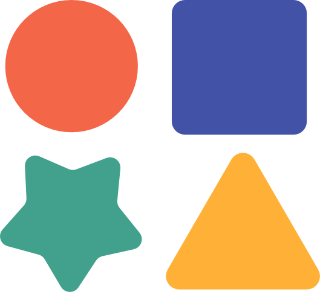

AboutBold visuals, big curiosity, and a love for all things color.
BY DAY I'm a graphic designer and art director at Indeed, creating marketing campaigns and brand work that connects with people. Before that, I interned at Whole Foods — illustrating and designing posters, signage, and packaging. My approach? Explore every option, chase the latest trends, study the classics, and figure out what actually works.
BY NIGHT You'll find me with knitting needles and an ambitious lace pattern (and probably more yarn than I need). When I'm not knitting, I'm drawing on Procreate, painting, or making beaded jewelry. Basically, if it involves making something beautiful, I'm in.
Background
My work spans brand identity, campaign design, editorial, illustration, event environments, and photoshoot art direction. I'm equally comfortable building a design system from scratch and adapting it across eight co-branded partners, or rolling up my sleeves to art direct a full-day photo shoot.
I love work that has to solve a real problem — whether that's helping a nurse in Detroit discover a better job, making a job seeker in LA feel seen by a brand, or turning a sister-in-law's living room into a Costco warehouse for a surprise 40th birthday.
Based in Austin, TX. Open to brand design and art direction roles.
Skills & Tools